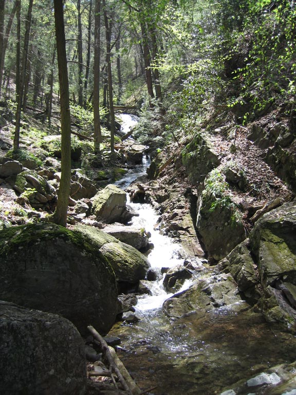
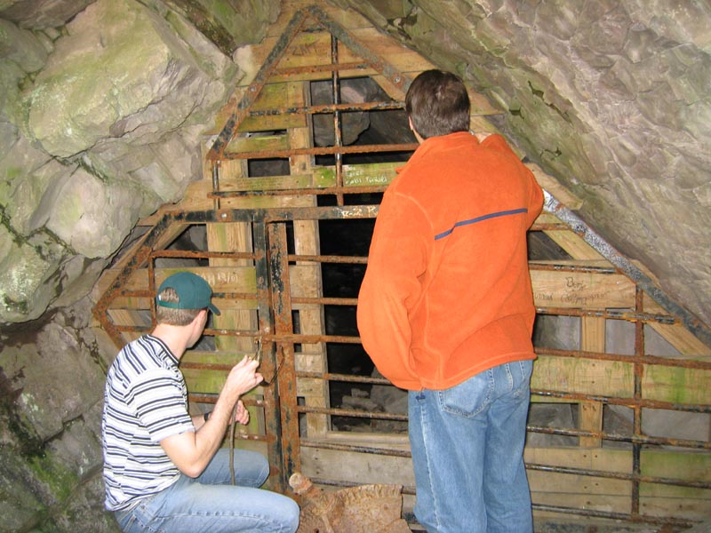
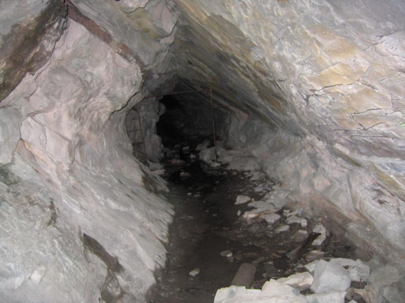
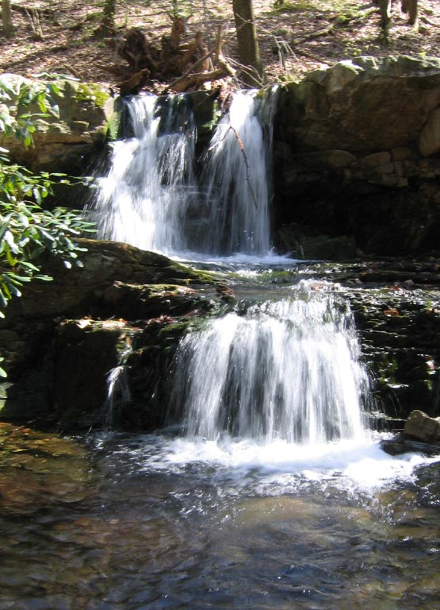
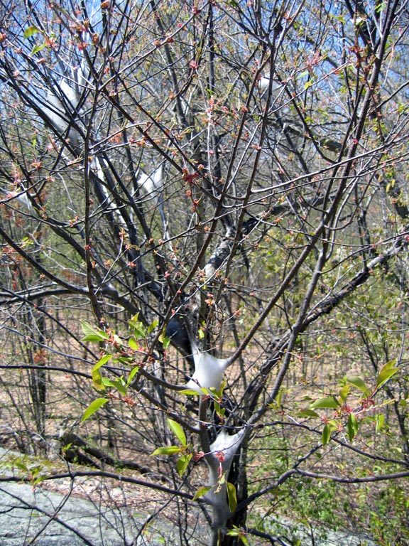
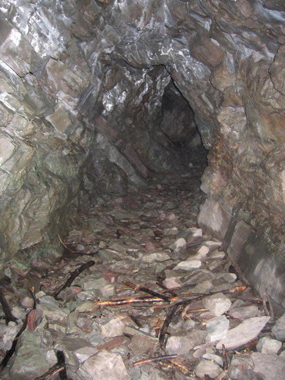
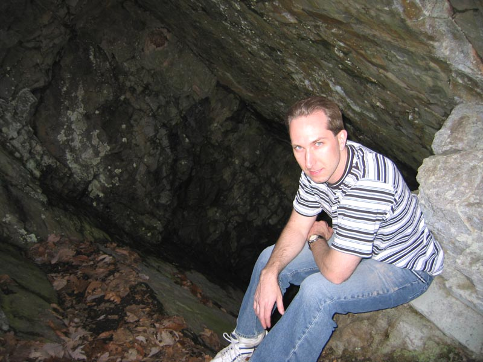

Copper Mine Trail in the Delaware Water Gap

The scenery was stunning throughout the trail. While we had trouble finding copper mines, we were temporarily sated by hypnotic landscapes such as this one.

The trail designer was smart enough to have this mine readily accessible, so people who couldn't find the other mines wouldn't get upset. However, we were still upset because they put a lock on the gate.

I still managed to slip my arm in to take a picture, as if we got through the gate!

A picturesque waterfall comforts us as we grow weary of our search for copper mines.

I think Paul said the webbing was the work of caterpillars. I thought spiders at first, but this would be overkill.

Well, the quick story is, we met up with other hikers that pointed us in the right direction. Look, a tunnel into a copper mine!

And after a bit of painstaking climbing on my part, then a bit more climbing in the correct direction, we found this behemoth pit that leads into the copper mine from above, compliments of a crapload of dynamite.